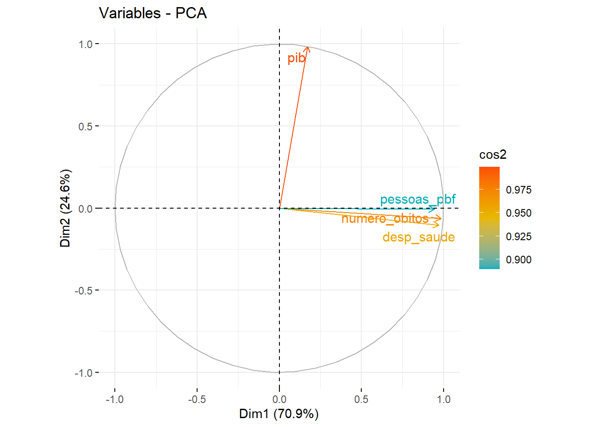
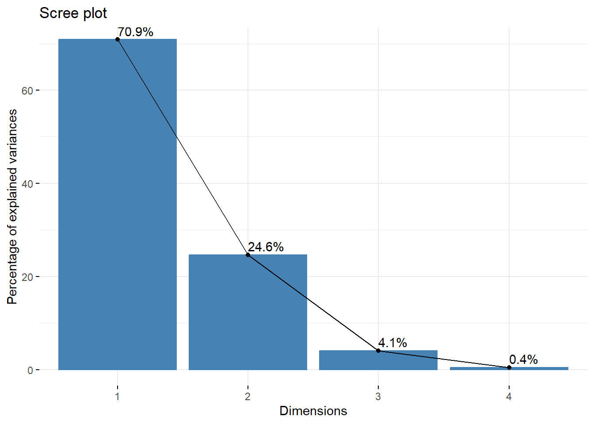

# Lista de pacotes necessários
pacotes <- c("tidyverse", "readxl", "FactoMineR", "factoextra", "gt", 'grateful')
# Instalar e carregar pacotes ausentes
for (pacote in pacotes) {
if (!require(pacote, character.only = TRUE)) {
install.packages(pacote)
library(pacote, character.only = TRUE)
}
} ANÁLISE DE COMPONENTES PRINCIPAIS
ANÁLISE DE COMPONENTES PRINCIPAIS
Compartilhando o código em R
Tutorial transformação digital nº 2
Resumo
Este tutorial aborda a análise de componentes principais (PCA) em R. Exploraremos os conceitos fundamentais da PCA e demonstraremos como implementá-la em R. O tutorial inclui exemplos práticos e código fonte para ajudar os leitores a compreender e aplicar a PCA em seus próprios projetos de análise de dados.
1 Introdução
A análise de componentes principais (ACP) é uma técnica estatística amplamente utilizada para redução de dimensionalidade e extração de informações relevantes de conjuntos de dados multivariados. O objetivo principal da PCA é transformar um conjunto de variáveis correlacionadas em um novo conjunto de variáveis não correlacionadas, chamadas de componentes principais. Cada componente principal é uma combinação linear das variáveis originais e é ordenado de acordo com a quantidade de variação que ele captura. Isso permite a identificação dos padrões mais significativos dos dados, facilitando a interpretação e visualização. (Manly e Navarro Alberto 2016)
Estes são alguns exemplos de aplicações:
Estudos de qualidade de vida: Através da ACP, é possível identificar dimensões principais que influenciam a qualidade de vida em uma determinada região, permitindo que políticas públicas sejam direcionadas de forma mais eficaz.
Análise de desigualdade social: A ACP pode ser aplicada em indicadores sociais e econômicos para compreender os principais fatores que contribuem para a desigualdade entre grupos populacionais.
Análise de dados de saúde: A ACP é útil para identificar padrões em grandes conjuntos de dados de saúde, como fatores de risco e grupos de doenças.
Estudos de mercado: A ACP é aplicada em pesquisas de mercado para identificar segmentos de clientes com características semelhantes, ajudando as empresas a direcionar suas estratégias de marketing.
Análise de indicadores econômicos: Através da ACP, é possível reduzir um grande número de indicadores econômicos em poucos componentes principais, facilitando a compreensão das principais tendências e correlações na economia.
Previsão econômica: A ACP pode ser usada para reduzir a dimensionalidade de séries temporais econômicas e melhorar a precisão das previsões de indicadores macroeconômicos.
2 Como calcular ACP no R
Antes de iniciar o processo de ACP, é necessário carregar as bibliotecas necessárias.
2.0.0.1 Importação dos dados:
Os dados utilizados para a análise de componentes principais são apenas um exemplo, a base comtém informações sobre o PIB, Número de óbitos, Despesas com saúde e número de beneficiários do bolsa família. Para calcular ACP os dados devem conter as variáveis numéricas.
Disponível em: Dados
# Importar dados
df_acp <- read_excel("df_acp.xlsx")2.0.0.2 Visualização da matriz de dados
Podemos usar o comando gt() para visualizar uma tabela estatistica do conjunto de dados. Isso ajuda a garantir que os dados foram carregados corretamente antes de prosseguir com a análise.
df_acp %>%
head(5) %>%
gt()| ano | sigla_uf | id_municipio | numero_obitos | desp_saude | populacao_atendida_agua | populacao_atentida_esgoto | familias_beneficiarias_pbf | pessoas_pbf | valor_pago_pbf | familias_cadastradas_cu | pessoas_cadastradas_cu | pib |
|---|---|---|---|---|---|---|---|---|---|---|---|---|
| 2019 | MG | 3100104 | 48 | 5088031 | 3997 | 4350 | 245 | 706 | 34731 | 942 | 2129 | 127672000 |
| 2019 | MG | 3100203 | 169 | 15933256 | 19540 | 701 | 454 | 1747 | 61298 | 2242 | 6290 | 517691000 |
| 2019 | MG | 3100302 | 86 | 8937634 | 9356 | 9356 | 945 | 3063 | 171267 | 1942 | 5508 | 203535000 |
| 2019 | MG | 3100401 | 36 | 3325094 | 3982 | 2604 | 474 | 1348 | 99821 | 929 | 2431 | 55935000 |
| 2019 | MG | 3100500 | 76 | 4597114 | 3263 | NA | 781 | 2637 | 142898 | 1508 | 4556 | 93635000 |
2.0.0.3 Limpeza e seleção de variáveis
Antes de proceder com ACP vamos selecionar algumas variaveis
dados<- df_acp %>% select(pib, numero_obitos, desp_saude, pessoas_pbf)2.0.1 Função de Redução de dimensionalidade
ACP é realizada usando o pacote FactoMineR. Nesse exemplo, o cálculo é feito com comando o PCA, onde “dados” é o dataframe que contém as variáveis a serem analisadas:
acp <- PCA(dados, graph=F)2.1 Visualização da qualidade no mapa de fatores:
Para visualizar a qualidade das variáveis no mapa de fatores, usa-se a função fviz_pca_var()
O gráfico que exibe a qualidade (cos²) de cada variável em relação aos componentes principais é uma representação visual da contribuição de cada variável para a formação desses componentes. O “cos²” é a proporção da variância da variável original que é explicada pelo componente principal específico.
#_____ Visualização por valores de cos2: qualidade no mapa de fatores
fviz_pca_var(acp, col.var = "cos2",
gradient.cols = c("#00AFBB", "#E7B800", "#FC4E07"),
repel = TRUE # Avoid text overlapping
)
Quando realizamos a Análise de Componentes Principais (ACP), estamos buscando encontrar novas variáveis (os componentes principais) que sejam combinações lineares das variáveis originais, de modo que eles capturem a maior quantidade possível de variação dos dados. Cada componente principal é uma combinação ponderada das variáveis originais, e a quantidade de variação explicada por cada componente é medida pelos autovalores associados a eles.
O gráfico de qualidade das variáveis em relação aos componentes principais ajuda a identificar quais variáveis têm uma forte influência na definição de cada componente principal e quais têm uma influência mais fraca. Essa informação é útil para entender quais variáveis são mais importantes para explicar a estrutura dos dados e quais têm menos impacto.
2.1.1 Visualização da comunaliade explicada por cada componente:
A função fviz_eig é utilizada para exibir a inércia explicada por cada componente principal e o pacote plotly permite deixar o gráfico interativo. Ela mostra o quanto de variação dos dados é explicada por cada componente:
fviz_eig(acp, addlabels=TRUE, ylim = c(0,70))
2.1.2 Sumarização dos resultados:
A função facto_summarize é usada para resumir as informações sobre as variáveis e os componentes principais obtidos a partir da ACP. No exemplo, a sumarização é feita para os dois primeiros componentes principais (axes = 1:2):
facto_summarize(acp, "var", axes = 1:2) name Dim.1 Dim.2 coord cos2 contrib
pib pib 0.1710860 0.984893502 0.9992856 0.9992856 26.16030
numero_obitos numero_obitos 0.9857684 -0.062278615 0.9756180 0.9756180 25.54070
desp_saude desp_saude 0.9717458 -0.105023373 0.9553198 0.9553198 25.00931
pessoas_pbf pessoas_pbf 0.9431881 -0.005357553 0.8896325 0.8896325 23.28969Analisando as coordenadas das variáveis nos dois componentes principais:
A variável despesas com saude tem uma forte relação positiva com o primeiro componente principal (Dim.1), mas uma relação negativa muito pequena com o segundo componente principal (Dim.2). Isso sugere que essa variável tem um papel dominante na definição do primeiro componente principal, enquanto sua influência no segundo componente é praticamente insignificante.
A variável populacao_atendida_agua também possui uma relação muito forte e positiva com o primeiro componente principal (Dim.1), mas uma relação negativa muito pequena com o segundo componente principal (Dim.2). Isso indica que essa variável também é um importante contribuinte para a definição do primeiro componente principal.
Assim como as duas variáveis anteriores, a “populacao_atentida_esgoto” tem uma relação positiva forte com o primeiro componente principal (Dim.1) e uma relação negativa pequena com o segundo componente principal (Dim.2). Isso sugere que essa variável é relevante para o primeiro componente principal.
A variável pessoas_beneficiarias_pbf tem uma relação positiva relativamente alta com o primeiro componente principal (Dim.1) e uma relação positiva menor com o segundo componente principal (Dim.2). Isso indica que essa variável contribui significativamente para ambos os componentes principais, mas tem uma importância maior no primeiro.
Por fim, o PIB tem uma relação positiva muito alta com o segundo componente principal (Dim.2) e uma relação positiva menor com o primeiro componente principal (Dim.1). Isso sugere que essa variável é essencialmente representada pelo segundo componente principal e tem uma importância menor no primeiro.
2.1.3 Referências
Manly, Bryan F. J., e Jorge A. Navarro Alberto. 2016. Multivariate Statistical Methods. Chapman; Hall/CRC. https://doi.org/10.1201/9781315382135.
Citação
BibTeX
@online{marinho](https://github.com/vitor-marinho-fjp),
author = {{[}Vitor Marinho{]}(https://github.com/vitor-marinho-fjp)
and {[}Renato Vale{]}(https://github.com/renato-vale)},
editor = {},
title = {Tutorial transformação digital n\textsuperscript{o} 2},
langid = {pt},
abstract = {Este tutorial aborda a análise de componentes principais
(PCA) em R. Exploraremos os conceitos fundamentais da PCA e
demonstraremos como implementá-la em R. O tutorial inclui exemplos
práticos e código fonte para ajudar os leitores a compreender e
aplicar a PCA em seus próprios projetos de análise de dados.}
}
Por favor, cite este trabalho como:
[Vitor Marinho](https://github.com/vitor-marinho-fjp), and [Renato
Vale](https://github.com/renato-vale). n.d. “Tutorial
transformação digital no 2.”